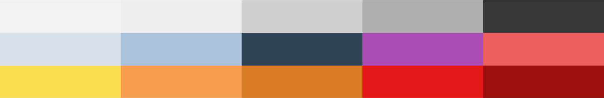

Ciclue
Knowledge is Power
The Asignment
Designing a wellness app that proposes something new in the market.
The Tools
Surveys - Interviews - Lean UX - Empathy Map - User Persona/ Journey - Competitive Analysis - User Scenarios - User Flows - Concept Testing - User Flow - Task Analysis - Low Fi Prototype - Usability Testing - Style Tile - UI Kit - Hi Fi Prototipe
The Credits
Susana Ortega Iglesias
Introduction to Research
Women are ciclic beings. Every month our bodies are exposed to different changes related to our menstrual cicle. Most of women, have been keeping track of it for generations, this track alouds us not only to plan when we want have a family, but also our every day life, because for some of us, the period can be something desabling. With the digital era a lot of women started to keep this track in apps, it alouds us to access a lot of functions that a normal calendar doesn´t have, but since we found out we have absolut no control of what this companies could do with our data, a lot of us have deleted them. But why do we have to give up such an amazing tool? How could we make the most of it? Do we really know all the symptoms associated to our cicle? Why do a lot a women find out they have endometriosis years after suffering intense pain? Why do we lack of so much information regarding our health? What could we do about it? I interviewed 4 women and made a survey that answered 40. I also pitched the idea to a doctor and consulted it with Digital Products for Health Sales Specialist.
Pain Points
80%
Only know a few symptoms (mainly the ones they personaly feel) related to our cicle, but don’t know if they are normal or not.
72%
Have a hard time finding a ginecologist that makes them feel comfortable.
70%
Are concerned about what happens to their personal data.
The Proposal
- An app with a business model not only based in the sale of private data, but on alouding our users to contact ginecologists that pay a subscription to appear in our app, in order to reach a specific customer niche.
- We don’t ask users data we don’t need to improve the experience, they can Log In with a nickname and any email thet want.
- We only share dissociated data for medical research.
- Our users will have in exchange for their data, information and results that positively influence their health.
- The app not only allows them to track their cycle, but also has alerts for when they register symptoms, which they should pay more attention to, and suggests specialized doctors in that field.
User Persona: Claudia
Problems
- Doesn’t know what happens to womens body during our cicle phases.
- Sometimes forget to track symptoms or the cicle.
- Doesn’t have a lot information about cicle symptoms.
- Doesn’t really know, what is normal or not about her cicle.
Needs
- A cycle tracking method that offers more information about its phases and symptoms.
- Being able to choose her gynecologist, according to her needs, in an easier way.
- Being able to know, with more certainty, when she should be concerned about a symptom.
- That cicling apps respect the privacy of her health data.
The Style
One of the main symptoms related to our period is anxiaty, anger and a general disconfort. My users need an app that offers them a sense of calm, of order. That’s why I chose Minimalism and Neomorphism as a style. Minimalism gives a sense of order and calm, by showing only the most important options you need and Neomorphism alouds users to have the sensation that they are playing with textures, which is also relaxing.
Colors
I used a palette of main colors for the interface in general. but since this is a cicle tracking app I also needed to add colors related to some of the symptoms my users may experience.
Typography
Hiragino Sans
Some Symptoms


Next Steps
- Allow users to make appointments through the app.
- To get this, we need the app to either have a version made for doctors or link it to their appointment systems.
- That users can link the app to their Apple Watch, to be able to control their basal temperature and know when they ovulate, for example.
- Continue personalizing the application and increasing the information that users can consult to keep up to date with their health.
- Make a version for pregnant women.